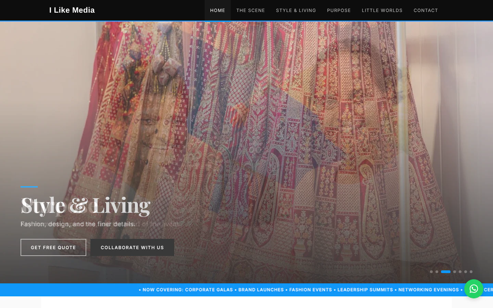
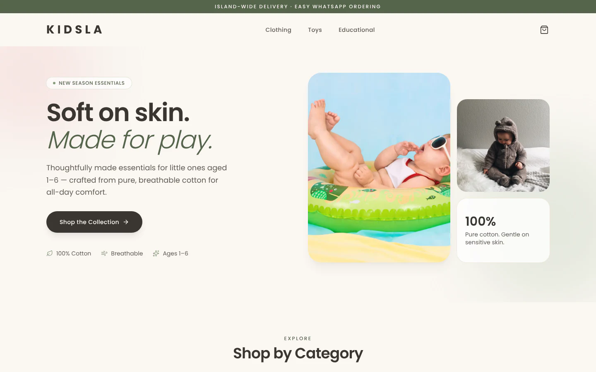
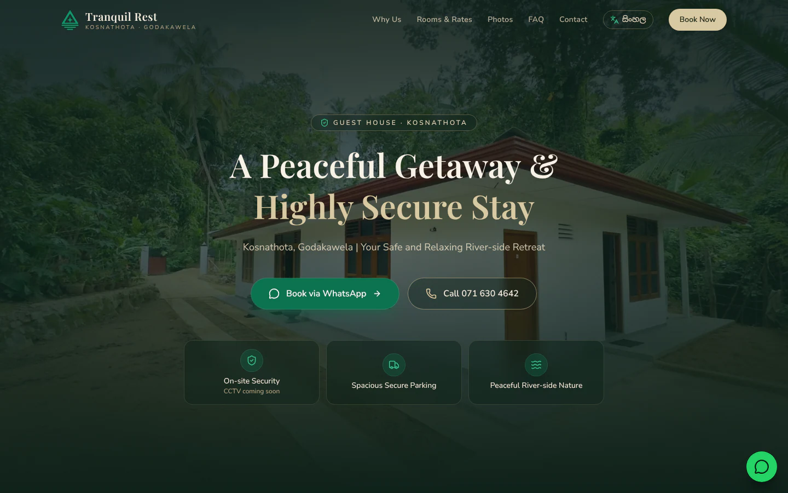
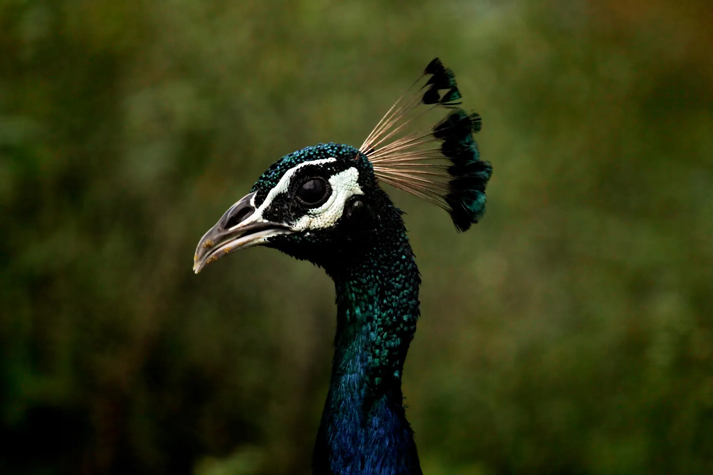

01
Full-stack Engineering
Production web apps on the MERN stack, including real-time features.
- MongoDB
- Express.js
- React.js
- Node.js
- Socket.IO
- Tailwind CSS
W.S.R. Rathnayaka
Creative Technologist — Social Media Manager & Web Developer
Building premium digital experiences — from real-time MERN platforms and mobile apps to brand strategy, photography and 3D motion.
I work across the whole digital experience. I build production MERN apps with real-time features, run social and brand strategy, and handle the photography, film and 3D that bring a brand to life.
Production web apps on the MERN stack, including real-time features.
Cross-platform apps, plus deployment and storage in the cloud.
Strategy, identity and content that make brands look and perform their best.
Photography, film and motion, from the shoot through to the final grade.
Live websites for real clients, then the full-stack platforms where I push further into real-time systems, commerce and mobile.
Highlighted · Client work

PM · Official Website
A responsive portfolio website showcasing professional photography services — built to turn visitors into booked clients.

PMR · Brand Platform
A targeted web platform for a personal photography brand, with a UI/UX flow designed to streamline customer bookings.

ILM · Digital Platform
A dynamic website presenting commercial media and corporate photography services with a strong, credible brand voice.
Technical builds

Marketplace · B2B Reverse Auction
A centralised e-commerce marketplace and B2B reverse-auction platform with a visual garment configurator and real-time bidding.

Premium Kidswear · E-commerce
A premium children’s clothing store with WhatsApp checkout routing, database-backed inventory and a secure admin dashboard.

Boutique Guest House
The official web platform for a boutique guest house, with direct WhatsApp booking and a 100 Lighthouse SEO score.

Real-time Board Game
A real-time, browser-based multiplayer Dam board game built for Sri Lankan players, with custom Sinhala UI reactions.
Mobile Health · Restaurant Management
A full-stack MERN restaurant management system (EacyDine) and a bilingual mobile health assistant app (MediLink).
Client work in digital media and photography, years of freelance design, and a start in banking operations.
Education
2022 — Present
University of Sri Jayewardenepura
Dec 2025 — Present Current
Peak Moments · PM · PMR · ILM
2021 — Present Current
Freelance
2020 — 2021
People’s Bank · Palledbadda
Logos, brand systems, social campaigns and merchandise made for clients across retail, hospitality and tech.
Lifestyle, portraits and wildlife from across Sri Lanka, shot on location and finished with careful colour grading.


